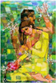
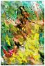
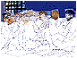
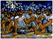
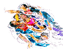
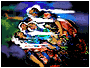
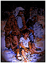

I s m a i l
Biography
Selected Paintings
Sketches
Computer Graphics
Exhibitions
T a m a m
Biography
Selected Paintings
Sketches
Exhibitions
G u e s t b o o k
Guestbook
View all entries
C o n t a c t u s
Shammout
O t h e r
R e l a t e d
T o p i c s
Art in Palestine
What's new
| Ismail Shammout |
| c
o m p u t e r g r a p h i c s.... |
Click on thumbnail to view larger image of painting..
| Ismail
Shammout and the Computer Shammout started his acquaintance with Computer in the late eighties when he began to discover in it new and unprecedented potential in several fields including graphic art. Computer is a tool or set of tools that enter the artist studio where he can use them to produce art works ; graphics. Potential capabilities for art works by computer whether with regard to forms or colors or possible changes that can be introduced to paintings, pictures, drawings are countless. This, of course, allows the artist opportunities for discovering color combinations and light effects in addition to unusual formations that go beyond the ordinary level. In the last few years (1994-1998) Shammout produced hundreds of art works using his computer. Most of these art works graphics- have been exhibited in several exhibitions. |
|||
 |
 |
 |
|
 |
|||
 |
 |
||
 |
|||